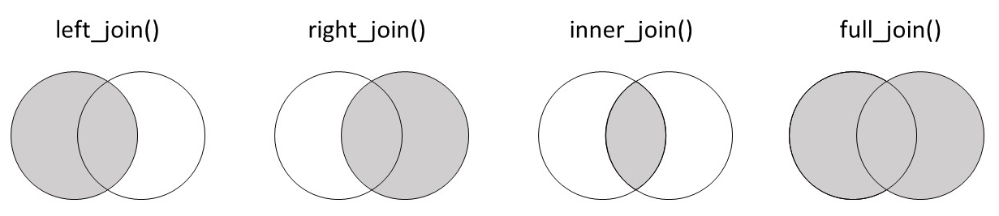

import pandas as pd
# TB incidence in Africa
tb_2019_africa = pd.read_csv(
"https://raw.githubusercontent.com/the-graph-courses/idap_book/main/data/tb_incidence_2019.csv"
)
# Health expenditure data
health_exp_2019 = pd.read_csv(
"https://raw.githubusercontent.com/the-graph-courses/idap_book/main/data/health_expend_per_cap_2019.csv"
)
# Highest expenditure countries
highest_exp = health_exp_2019.sort_values("expend_usd", ascending=False).head(70)
# TB cases in children
tb_cases_children = pd.read_csv(
"https://raw.githubusercontent.com/the-graph-courses/idap_book/main/data/tb_cases_children_2012.csv"
).dropna()
# Country continents data
country_continents = pd.read_csv(
"https://raw.githubusercontent.com/the-graph-courses/idap_book/main/data/country_continents.csv"
)
# people data
people = pd.DataFrame({"name": ["Alice", "Bob", "Charlie"], "age": [25, 32, 45]})
# Test information
test_info = pd.DataFrame(
{
"name": ["Alice", "Bob", "Charlie"],
"test_date": ["2023-06-05", "2023-08-10", "2023-07-15"],
"result": ["Negative", "Positive", "Negative"],
}
)
# Disordered test information
test_info_disordered = pd.DataFrame(
{
"name": ["Bob", "Alice", "Charlie"], # Bob in first row
"test_date": ["2023-08-10", "2023-06-05", "2023-07-15"],
"result": ["Positive", "Negative", "Negative"],
}
)
# Multiple test information
test_info_multiple = pd.DataFrame(
{
"name": ["Alice", "Alice", "Bob", "Charlie"],
"test_date": ["2023-06-05", "2023-06-06", "2023-08-10", "2023-07-15"],
"result": ["Negative", "Negative", "Positive", "Negative"],
}
)
# Test information with different name
test_info_different_name = pd.DataFrame(
{
"first_name": ["Alice", "Bob", "Charlie"],
"test_date": ["2023-06-05", "2023-08-10", "2023-07-15"],
"result": ["Negative", "Positive", "Negative"],
}
)
# Test information including Xavier
test_info_xavier = pd.DataFrame(
{
"name": ["Alice", "Bob", "Xavier"],
"test_date": ["2023-06-05", "2023-08-10", "2023-05-02"],
"result": ["Negative", "Positive", "Negative"],
}
)
# Students data
students = pd.DataFrame(
{"student_id": [1, 2, 3], "name": ["Alice", "Bob", "Charlie"], "age": [20, 22, 21]}
)
# Exam dates data
exam_dates = pd.DataFrame(
{"student_id": [1, 3], "exam_date": ["2023-05-20", "2023-05-22"]}
)
# Employee details
employee_details = pd.DataFrame(
{
"id_number": ["E001", "E002", "E003"],
"full_name": ["Emily", "Frank", "Grace"],
"department": ["HR", "IT", "Marketing"],
}
)
# Performance reviews
performance_reviews = pd.DataFrame(
{
"employee_code": ["E001", "E002", "E003"],
"review_type": ["Annual", "Mid-year", "Annual"],
"review_date": ["2022-05-10", "2023-09-01", "2021-12-15"],
}
)
# Sales data
sales_data = pd.DataFrame(
{
"salesperson_id": [1, 4, 8],
"product": ["Laptop", "Smartphone", "Tablet"],
"date_of_sale": ["2023-01-15", "2023-03-05", "2023-02-20"],
}
)
# Salesperson peoples
salesperson_peoples = pd.DataFrame(
{
"salesperson_id": [1, 2, 3, 5, 8],
"name": ["Alice", "Bob", "Charlie", "Diana", "Eve"],
"age": [28, 45, 32, 55, 40],
"gender": ["Female", "Male", "Male", "Female", "Female"],
}
)
# Total sales data
total_sales = pd.DataFrame(
{
"product": [
"Laptop",
"Desktop",
"Tablet",
"Smartphone",
"Smartwatch",
"Headphones",
"Monitor",
"Keyboard",
"Mouse",
"Printer",
],
"total_units_sold": [9751, 136, 8285, 2478, 3642, 5231, 1892, 4267, 3891, 982],
}
)
# Product feedback data
product_feedback = pd.DataFrame(
{
"product": [
"Laptop",
"Desktop",
"Tablet",
"Smartphone",
"Smartwatch",
"Headphones",
"Monitor",
"Gaming Console",
"Camera",
"Speaker",
],
"n_positive_reviews": [1938, 128, 842, 1567, 723, 956, 445, 582, 234, 678],
"n_negative_reviews": [42, 30, 56, 89, 34, 28, 15, 11, 8, 25],
}
)
# Sales incidence data
sales = pd.DataFrame(
{
"year": [2010, 2011, 2014, 2016, 2017],
"sales_count": [69890, 66507, 59831, 58704, 59151],
}
)
# Customer complaints data
customer_complaints = pd.DataFrame(
{
"year": [2011, 2013, 2015, 2016, 2019],
"complaints_count": [1292, 1100, 1011, 940, 895],
}
)
employees = pd.DataFrame(
{"employee_id": [1, 2, 3], "name": ["John", "Joy", "Khan"], "age": [32, 28, 40]}
)
training_sessions = pd.DataFrame(
{
"employee_id": [1, 2, 3],
"training_date": ["2023-01-20", "2023-02-20", "2023-05-15"],
}
)
customer_details = pd.DataFrame(
{
"id_number": ["A001", "B002", "C003"],
"full_name": ["Alice", "Bob", "Charlie"],
"address": ["123 Elm St", "456 Maple Dr", "789 Oak Blvd"],
}
)
# Order Records
order_records = pd.DataFrame(
{
"customer_code": ["A001", "B002", "C003"],
"product_type": ["Electronics", "Books", "Clothing"],
"order_date": ["2022-05-10", "2023-09-01", "2021-12-15"],
}
)21 数据集连接介绍
21.1 数据与包
请运行下面的代码以加载我们将在本课程中使用的包和数据集。
21.2 简介
连接是处理数据时的关键技能,因为它允许您从多个来源组合关于相同实体的信息,从而进行更全面和有洞察力的分析。在本课程中,您将学习如何使用 Python 的 pandas 库使用不同的连接技术。让我们开始吧!
21.3 学习目标
- 理解不同连接的工作原理:左连接、右连接、内连接和外连接。
- 能够使用
pd.merge()函数将简单的数据集连接在一起。
21.4 我们为什么需要连接?
为了说明连接的实用性,让我们从一个简单的例子开始。考虑以下两个数据集。第一个 people 包含三个人的姓名和年龄:
people| name | age | |
|---|---|---|
| 0 | Alice | 25 |
| 1 | Bob | 32 |
| 2 | Charlie | 45 |
第二个 test_info 包含这些人的测试日期和结果:
test_info| name | test_date | result | |
|---|---|---|---|
| 0 | Alice | 2023-06-05 | Negative |
| 1 | Bob | 2023-08-10 | Positive |
| 2 | Charlie | 2023-07-15 | Negative |
我们希望将这些数据一起分析,因此我们需要一种将它们组合起来的方法。
我们可以考虑的一个选项是使用 pd.concat() 将数据框水平拼接:
pd.concat([people, test_info], axis=1)| name | age | name | test_date | result | |
|---|---|---|---|---|---|
| 0 | Alice | 25 | Alice | 2023-06-05 | Negative |
| 1 | Bob | 32 | Bob | 2023-08-10 | Positive |
| 2 | Charlie | 45 | Charlie | 2023-07-15 | Negative |
这成功地合并了数据集,但并不非常智能。该函数基本上是“粘贴”或“订书”这两个表。因此,您会注意到“name”列出现了两次。这并不理想,并且会对分析造成问题。
另一个问题是,如果两个数据集中的行未对齐。此时,使用 pd.concat() 将数据不正确地组合在一起。考虑 test_info_disordered 数据集,现在第一行是 Bob:
test_info_disordered| name | test_date | result | |
|---|---|---|---|
| 0 | Bob | 2023-08-10 | Positive |
| 1 | Alice | 2023-06-05 | Negative |
| 2 | Charlie | 2023-07-15 | Negative |
如果我们将其与原始 people 数据集拼接,其中 Bob 在第二行,会发生什么?
pd.concat([people, test_info_disordered], axis=1)| name | age | name | test_date | result | |
|---|---|---|---|---|---|
| 0 | Alice | 25 | Bob | 2023-08-10 | Positive |
| 1 | Bob | 32 | Alice | 2023-06-05 | Negative |
| 2 | Charlie | 45 | Charlie | 2023-07-15 | Negative |
Alice 的个人详情现在错误地与 Bob 的测试信息对齐了!
第三个问题是当一个实体在一个数据集中出现多次时。也许 Alice 进行了多次测试:
test_info_multiple| name | test_date | result | |
|---|---|---|---|
| 0 | Alice | 2023-06-05 | Negative |
| 1 | Alice | 2023-06-06 | Negative |
| 2 | Bob | 2023-08-10 | Positive |
| 3 | Charlie | 2023-07-15 | Negative |
如果我们尝试将其与 people 数据集拼接,由于行数不同,我们会得到不匹配的数据:
pd.concat([people, test_info_multiple], axis=1)| name | age | name | test_date | result | |
|---|---|---|---|---|---|
| 0 | Alice | 25.0 | Alice | 2023-06-05 | Negative |
| 1 | Bob | 32.0 | Alice | 2023-06-06 | Negative |
| 2 | Charlie | 45.0 | Bob | 2023-08-10 | Positive |
| 3 | NaN | NaN | Charlie | 2023-07-15 | Negative |
这会导致 NaN 值和数据对不齐。
附注
我们这里所拥有的是一种 一对多 关系——在人员数据中有一个 Alice,但在测试数据中有多行 Alice,因为她进行了多次测试。在这种情况下的连接将在第二个连接课程中详细介绍。
显然,我们需要比拼接更智能的方式来组合数据集;我们需要进入连接的世界。在 pandas 中,执行连接的函数是 pd.merge()。
它适用于简单的情况,并且不会重复名称列:
pd.merge(people, test_info)| name | age | test_date | result | |
|---|---|---|---|---|
| 0 | Alice | 25 | 2023-06-05 | Negative |
| 1 | Bob | 32 | 2023-08-10 | Positive |
| 2 | Charlie | 45 | 2023-07-15 | Negative |
它适用于数据集未按相同顺序排列的情况:
pd.merge(people, test_info_disordered)| name | age | test_date | result | |
|---|---|---|---|---|
| 0 | Alice | 25 | 2023-06-05 | Negative |
| 1 | Bob | 32 | 2023-08-10 | Positive |
| 2 | Charlie | 45 | 2023-07-15 | Negative |
如您所见,Alice 的详情现在正确地与她的测试结果对齐。
并且当每个个体有多个测试记录时,它也能正常工作:
pd.merge(people, test_info_multiple)| name | age | test_date | result | |
|---|---|---|---|---|
| 0 | Alice | 25 | 2023-06-05 | Negative |
| 1 | Alice | 25 | 2023-06-06 | Negative |
| 2 | Bob | 32 | 2023-08-10 | Positive |
| 3 | Charlie | 45 | 2023-07-15 | Negative |
在这种情况下,pd.merge() 函数正确地为 Alice 的每次测试重复了她的详情。
简单而优雅!
21.5 pd.merge() 语法
现在我们了解了 为什么 需要连接,让我们来看一下它们的基本语法。
连接将两个数据框作为前两个参数:left(左数据框)和 right(右数据框)。在 pandas 中,您可以将它们作为位置参数或关键字参数提供:
# left and right
pd.merge(left=people, right=test_info) # keyword arguments
pd.merge(people, test_info) # positional arguments| name | age | test_date | result | |
|---|---|---|---|---|
| 0 | Alice | 25 | 2023-06-05 | Negative |
| 1 | Bob | 32 | 2023-08-10 | Positive |
| 2 | Charlie | 45 | 2023-07-15 | Negative |
另一个关键参数是 on,它指示用于连接表的列或 键。我们并不总是需要提供这个参数;它可以从数据集中 推断 出来。例如,在我们最初的例子中,people 和 test_info 中唯一共同的列是 “name”。因此,合并函数假定 on='name':
# on argument is optional if the column key is the same in both dataframes
pd.merge(people, test_info)
pd.merge(people, test_info, on="name")| name | age | test_date | result | |
|---|---|---|---|---|
| 0 | Alice | 25 | 2023-06-05 | Negative |
| 1 | Bob | 32 | 2023-08-10 | Positive |
| 2 | Charlie | 45 | 2023-07-15 | Negative |
词汇
用于在连接操作中匹配两个数据框行的列被称为 键。在 pandas 的 merge() 函数中,键在 on 参数中指定,如 pd.merge(people, test_info, on='name') 中所示。
如果两个数据集中的键名称不同,会发生什么呢?考虑 test_info_different_name 数据集,其中 “name” 列更改为 “first_name”:
test_info_different_name| first_name | test_date | result | |
|---|---|---|---|
| 0 | Alice | 2023-06-05 | Negative |
| 1 | Bob | 2023-08-10 | Positive |
| 2 | Charlie | 2023-07-15 | Negative |
如果我们尝试将 test_info_different_name 与原始 people 数据集连接,我们将遇到错误:
pd.merge(people, test_info_different_name)MergeError: No common columns to perform merge on. Merge options: left_on=None, right_on=None, left_index=False, right_index=False错误表明没有共同的变量,因此无法进行连接。
在这种情况下,您有两个选择:您可以将第二个数据框中的列重命名以匹配第一个数据框,或者更简单地,使用 left_on 和 right_on 指定要连接的列。
以下是如何操作:
pd.merge(people, test_info_different_name, left_on='name', right_on='first_name')| name | age | first_name | test_date | result | |
|---|---|---|---|---|---|
| 0 | Alice | 25 | Alice | 2023-06-05 | Negative |
| 1 | Bob | 32 | Bob | 2023-08-10 | Positive |
| 2 | Charlie | 45 | Charlie | 2023-07-15 | Negative |
这种语法基本上表示,“因为它们代表相同的数据,所以将左数据框中的 name 连接到右数据框中的 first_name”。
词汇
键:在连接操作中用于匹配两个数据框行的列或列的集合。
左连接:一种连接类型,保留左数据框中的所有行,并添加右数据框中匹配的行。如果没有匹配,右侧的结果为 NaN。
练习
21.6 练习题:连接员工和培训课程
考虑以下两个数据集,一个包含员工详情,另一个包含这些员工的培训课程日期。
employees| employee_id | name | age | |
|---|---|---|---|
| 0 | 1 | John | 32 |
| 1 | 2 | Joy | 28 |
| 2 | 3 | Khan | 40 |
training_sessions| employee_id | training_date | |
|---|---|---|
| 0 | 1 | 2023-01-20 |
| 1 | 2 | 2023-02-20 |
| 2 | 3 | 2023-05-15 |
在连接这两个数据集后,您预计会有多少行和多少列?
现在连接这两个数据集并检查您的答案。
# Your code here
练习
21.7 练习题:使用 on 参数进行连接
以下是两个数据集,一个包含客户详情,另一个包含这些客户的订单记录。
customer_details| id_number | full_name | address | |
|---|---|---|---|
| 0 | A001 | Alice | 123 Elm St |
| 1 | B002 | Bob | 456 Maple Dr |
| 2 | C003 | Charlie | 789 Oak Blvd |
order_records| customer_code | product_type | order_date | |
|---|---|---|---|
| 0 | A001 | Electronics | 2022-05-10 |
| 1 | B002 | Books | 2023-09-01 |
| 2 | C003 | Clothing | 2021-12-15 |
将 customer_details 和 order_records 数据集连接起来。由于客户标识列名称不同,您需要使用 left_on 和 right_on 参数。
21.8 连接类型
到目前为止的简单示例涉及可以完美匹配的数据集——一个数据集中的每一行在另一个数据集中都有对应的行。
现实世界中的数据通常更为复杂。通常,第一个表中会有一些条目在第二个表中没有对应的条目,反之亦然。
为了处理这些不完美匹配的情况,不同的连接类型具有特定的行为:left、right、inner 和 outer。在接下来的章节中,我们将通过示例了解每种连接类型如何处理不完美匹配的数据集。
21.9 left 连接
让我们从 left 连接开始。为了看看它如何处理不匹配的行,我们将尝试将原始 people 数据集与修改后的 test_info 数据集连接起来。
作为提醒,这里是包含 Alice、Bob 和 Charlie 的 people 数据集:
people| name | age | |
|---|---|---|
| 0 | Alice | 25 |
| 1 | Bob | 32 |
| 2 | Charlie | 45 |
对于测试信息,我们将删除 Charlie,并添加一个新个体 Xavier 及其测试数据:
test_info_xavier| name | test_date | result | |
|---|---|---|---|
| 0 | Alice | 2023-06-05 | Negative |
| 1 | Bob | 2023-08-10 | Positive |
| 2 | Xavier | 2023-05-02 | Negative |
我们可以使用 how 参数指定连接类型:
pd.merge(people, test_info_xavier, how='left')| name | age | test_date | result | |
|---|---|---|---|---|
| 0 | Alice | 25 | 2023-06-05 | Negative |
| 1 | Bob | 32 | 2023-08-10 | Positive |
| 2 | Charlie | 45 | NaN | NaN |
正如您所见,使用 左 连接时,左 数据框(people)的所有记录都会被保留。因此,即使 Charlie 在 test_info_xavier 数据集中没有匹配,他仍包含在输出中。(但由于他的测试信息在 test_info_xavier 中不可用,这些值被设置为 NaN。)
另一方面,仅存在于右数据框中的 Xavier 会被删除。
下图展示了此连接的工作方式:

如果我们颠倒数据框的顺序会怎样?让我们看看当 test_info_xavier 是左数据框,people 是右数据框时的结果:
pd.merge(test_info_xavier, people, on='name', how='left')| name | test_date | result | age | |
|---|---|---|---|---|
| 0 | Alice | 2023-06-05 | Negative | 25.0 |
| 1 | Bob | 2023-08-10 | Positive | 32.0 |
| 2 | Xavier | 2023-05-02 | Negative | NaN |
同样,left 连接保留了 左 数据框(现在是 test_info_xavier)的所有行。这意味着这次 Xavier 的数据被包含在内。另一方面,Charlie 被排除在外。
关键点
主数据集:在连接的上下文中,主数据集指的是操作中的主要或优先数据集。在左连接中,左数据框被视为主数据集,因为其所有行都会保留在输出中,无论它们是否在另一个数据框中有匹配的行。
练习
21.10 练习题:左连接学生和考试日期
考虑以下两个数据集,一个包含学生详情,另一个包含部分学生的考试日期。
students| student_id | name | age | |
|---|---|---|---|
| 0 | 1 | Alice | 20 |
| 1 | 2 | Bob | 22 |
| 2 | 3 | Charlie | 21 |
exam_dates| student_id | exam_date | |
|---|---|---|
| 0 | 1 | 2023-05-20 |
| 1 | 3 | 2023-05-22 |
使用左连接将 students 数据集与 exam_dates 数据集连接起来。
21.11 分析非洲结核病发病率与健康支出
让我们尝试另一个示例,这次使用更实际的一组数据。
首先,我们有一些非洲国家每 10 万人中的结核病发病率数据,来自世卫组织:
tb_2019_africa| country | cases | conf_int_95 | |
|---|---|---|---|
| 0 | Burundi | 107 | [69 – 153] |
| 1 | Sao Tome and Principe | 114 | [45 – 214] |
| 2 | Senegal | 117 | [83 – 156] |
| 3 | Mauritius | 12 | [9 – 15] |
| 4 | Côte d’Ivoire | 137 | [88 – 197] |
| 5 | Ethiopia | 140 | [98 – 188] |
| 6 | Chad | 142 | [92 – 202] |
| 7 | Ghana | 144 | [70 – 244] |
| 8 | Malawi | 146 | [78 – 235] |
| 9 | Seychelles | 15 | [13 – 18] |
| 10 | Gambia | 158 | [117 – 204] |
| 11 | Guinea | 176 | [114 – 251] |
| 12 | Cameroon | 179 | [116 – 255] |
| 13 | Zimbabwe | 199 | [147 – 258] |
| 14 | Uganda | 200 | [117 – 303] |
| 15 | Nigeria | 219 | [143 – 311] |
| 16 | South Sudan | 227 | [147 – 324] |
| 17 | Madagascar | 233 | [151 – 333] |
| 18 | United Republic of Tanzania | 237 | [112 – 408] |
| 19 | Botswana | 253 | [195 – 317] |
| 20 | Kenya | 267 | [163 – 396] |
| 21 | Equatorial Guinea | 286 | [185 – 408] |
| 22 | Sierra Leone | 295 | [190 – 422] |
| 23 | Liberia | 308 | [199 – 440] |
| 24 | Democratic Republic of the Congo | 320 | [207 – 457] |
| 25 | Zambia | 333 | [216 – 474] |
| 26 | Comoros | 35 | [23 – 50] |
| 27 | Angola | 351 | [227 – 501] |
| 28 | Mozambique | 361 | [223 – 532] |
| 29 | Guinea-Bissau | 361 | [234 – 516] |
| 30 | Eswatini | 363 | [228 – 527] |
| 31 | Togo | 37 | [30 – 45] |
| 32 | Congo | 373 | [237 – 541] |
| 33 | Cabo Verde | 46 | [35 – 58] |
| 34 | Burkina Faso | 47 | [30 – 67] |
| 35 | Namibia | 486 | [348 – 647] |
| 36 | Mali | 52 | [34 – 74] |
| 37 | Gabon | 521 | [337 – 744] |
| 38 | Central African Republic | 540 | [349 – 771] |
| 39 | Benin | 55 | [36 – 79] |
| 40 | Rwanda | 57 | [44 – 72] |
| 41 | Algeria | 61 | [46 – 77] |
| 42 | South Africa | 615 | [427 – 835] |
| 43 | Lesotho | 654 | [406 – 959] |
| 44 | Niger | 84 | [54 – 120] |
| 45 | Eritrea | 86 | [40 – 151] |
| 46 | Mauritania | 89 | [58 – 127] |
我们希望分析非洲国家的结核病发病率如何随着人均政府卫生支出的变化而变化。为此,我们有来自世卫组织的按人均美元计的健康支出数据,涵盖所有大洲的国家:
health_exp_2019| country | expend_usd | |
|---|---|---|
| 0 | Nigeria | 10.97 |
| 1 | Bahamas | 1002.00 |
| 2 | United Arab Emirates | 1015.00 |
| 3 | Nauru | 1038.00 |
| 4 | Slovakia | 1058.00 |
| ... | ... | ... |
| 180 | Myanmar | 9.64 |
| 181 | Malawi | 9.78 |
| 182 | Cuba | 901.80 |
| 183 | Tunisia | 97.75 |
| 184 | Nicaragua | 99.73 |
185 rows × 2 columns
我们应该使用哪个数据集作为连接的左数据框?
由于我们的目标是分析非洲国家,我们应该使用 tb_2019_africa 作为左数据框。这将确保在最终的连接数据集中保留所有非洲国家。
让我们连接它们:
tb_health_exp_joined = pd.merge(tb_2019_africa, health_exp_2019, on='country', how='left')
tb_health_exp_joined| country | cases | conf_int_95 | expend_usd | |
|---|---|---|---|---|
| 0 | Burundi | 107 | [69 – 153] | 6.07 |
| 1 | Sao Tome and Principe | 114 | [45 – 214] | 47.64 |
| 2 | Senegal | 117 | [83 – 156] | 15.47 |
| 3 | Mauritius | 12 | [9 – 15] | NaN |
| 4 | Côte d’Ivoire | 137 | [88 – 197] | 22.25 |
| 5 | Ethiopia | 140 | [98 – 188] | 5.93 |
| 6 | Chad | 142 | [92 – 202] | 4.76 |
| 7 | Ghana | 144 | [70 – 244] | 30.01 |
| 8 | Malawi | 146 | [78 – 235] | 9.78 |
| 9 | Seychelles | 15 | [13 – 18] | 572.00 |
| 10 | Gambia | 158 | [117 – 204] | 9.40 |
| 11 | Guinea | 176 | [114 – 251] | 9.61 |
| 12 | Cameroon | 179 | [116 – 255] | 6.26 |
| 13 | Zimbabwe | 199 | [147 – 258] | 7.82 |
| 14 | Uganda | 200 | [117 – 303] | 5.05 |
| 15 | Nigeria | 219 | [143 – 311] | 10.97 |
| 16 | South Sudan | 227 | [147 – 324] | NaN |
| 17 | Madagascar | 233 | [151 – 333] | 6.26 |
| 18 | United Republic of Tanzania | 237 | [112 – 408] | 16.02 |
| 19 | Botswana | 253 | [195 – 317] | 292.10 |
| 20 | Kenya | 267 | [163 – 396] | 39.57 |
| 21 | Equatorial Guinea | 286 | [185 – 408] | 47.30 |
| 22 | Sierra Leone | 295 | [190 – 422] | 6.28 |
| 23 | Liberia | 308 | [199 – 440] | 8.38 |
| 24 | Democratic Republic of the Congo | 320 | [207 – 457] | 3.14 |
| 25 | Zambia | 333 | [216 – 474] | 27.09 |
| 26 | Comoros | 35 | [23 – 50] | NaN |
| 27 | Angola | 351 | [227 – 501] | 28.59 |
| 28 | Mozambique | 361 | [223 – 532] | 9.35 |
| 29 | Guinea-Bissau | 361 | [234 – 516] | 3.90 |
| 30 | Eswatini | 363 | [228 – 527] | 131.50 |
| 31 | Togo | 37 | [30 – 45] | 7.56 |
| 32 | Congo | 373 | [237 – 541] | 25.82 |
| 33 | Cabo Verde | 46 | [35 – 58] | 111.50 |
| 34 | Burkina Faso | 47 | [30 – 67] | 17.17 |
| 35 | Namibia | 486 | [348 – 647] | 204.30 |
| 36 | Mali | 52 | [34 – 74] | 11.03 |
| 37 | Gabon | 521 | [337 – 744] | 125.60 |
| 38 | Central African Republic | 540 | [349 – 771] | 3.58 |
| 39 | Benin | 55 | [36 – 79] | 6.33 |
| 40 | Rwanda | 57 | [44 – 72] | 20.20 |
| 41 | Algeria | 61 | [46 – 77] | 163.00 |
| 42 | South Africa | 615 | [427 – 835] | 321.70 |
| 43 | Lesotho | 654 | [406 – 959] | 53.02 |
| 44 | Niger | 84 | [54 – 120] | 11.14 |
| 45 | Eritrea | 86 | [40 – 151] | 4.45 |
| 46 | Mauritania | 89 | [58 – 127] | 22.40 |
现在在连接的数据集中,我们只有非洲国家,这正是我们想要的。
左数据框 tb_2019_africa 的所有行都被保留,而 health_exp_2019 中的非洲国家被丢弃。
我们可以通过过滤 NaN 值来检查 tb_2019_africa 中是否有任何行在 health_exp_2019 中没有匹配:
tb_health_exp_joined.query("expend_usd.isna()")| country | cases | conf_int_95 | expend_usd | |
|---|---|---|---|---|
| 3 | Mauritius | 12 | [9 – 15] | NaN |
| 16 | South Sudan | 227 | [147 – 324] | NaN |
| 26 | Comoros | 35 | [23 – 50] | NaN |
这显示有 3 个国家——毛里求斯、南苏丹和科摩罗——在 health_exp_2019 中没有支出数据。但由于它们存在于 tb_2019_africa 中,而 tb_2019_africa 是左数据框,它们仍被包含在连接数据中。
练习
21.12 练习题:左连接结核病例和大洲
第一个数据集 tb_cases_children 包含 2012 年各国 15 岁以下的结核病例数:
tb_cases_children| country | tb_cases_smear_0_14 | |
|---|---|---|
| 0 | Afghanistan | 588.0 |
| 1 | Albania | 0.0 |
| 2 | Algeria | 89.0 |
| 4 | Andorra | 0.0 |
| 5 | Angola | 982.0 |
| ... | ... | ... |
| 211 | Viet Nam | 142.0 |
| 213 | West Bank and Gaza Strip | 0.0 |
| 214 | Yemen | 105.0 |
| 215 | Zambia | 321.0 |
| 216 | Zimbabwe | 293.0 |
200 rows × 2 columns
country_continents 列出了所有国家及其对应的区域和大洲:
country_continents| country.name.en | continent | region | |
|---|---|---|---|
| 0 | Afghanistan | Asia | South Asia |
| 1 | Albania | Europe | Europe & Central Asia |
| 2 | Algeria | Africa | Middle East & North Africa |
| 3 | American Samoa | Oceania | East Asia & Pacific |
| 4 | Andorra | Europe | Europe & Central Asia |
| ... | ... | ... | ... |
| 286 | Yugoslavia | NaN | Europe & Central Asia |
| 287 | Zambia | Africa | Sub-Saharan Africa |
| 288 | Zanzibar | NaN | Sub-Saharan Africa |
| 289 | Zimbabwe | Africa | Sub-Saharan Africa |
| 290 | Åland Islands | Europe | Europe & Central Asia |
291 rows × 3 columns
您的目标是将大洲和区域数据添加到结核病例数据集中。
哪个数据框应该放在左侧?哪个应该放在右侧?一旦决定,使用左连接适当地连接数据集。
21.13 right 连接
right 连接可以被视为 left 连接的镜像。其机制相同,但现在保留 右 数据框的所有行,同时仅保留在右数据框中找到匹配的左数据框行。
让我们通过一个例子来理解这一点。我们将使用原始的 people 和修改后的 test_info_xavier 数据集:
people
test_info_xavier| name | test_date | result | |
|---|---|---|---|
| 0 | Alice | 2023-06-05 | Negative |
| 1 | Bob | 2023-08-10 | Positive |
| 2 | Xavier | 2023-05-02 | Negative |
现在让我们尝试进行右连接,将 people 作为右数据框:
pd.merge(test_info_xavier, people, on='name', how='right')| name | test_date | result | age | |
|---|---|---|---|---|
| 0 | Alice | 2023-06-05 | Negative | 25 |
| 1 | Bob | 2023-08-10 | Positive | 32 |
| 2 | Charlie | NaN | NaN | 45 |
希望您已经掌握了这一点,并能预测输出!由于 people 是 右 数据框,并且我们使用的是 右 连接,people 中的所有行都会被保留——Alice、Bob 和 Charlie——但仅保留与 test_info_xavier 中匹配的记录。
下图说明了这一过程:

一个重要的点——相同的最终数据框可以通过 left 连接或 right 连接创建;这仅取决于您将数据框提供给这些函数的顺序:
# Here, right join prioritizes the right dataframe, people
pd.merge(test_info_xavier, people, on='name', how='right')| name | test_date | result | age | |
|---|---|---|---|---|
| 0 | Alice | 2023-06-05 | Negative | 25 |
| 1 | Bob | 2023-08-10 | Positive | 32 |
| 2 | Charlie | NaN | NaN | 45 |
# Here, left join prioritizes the left dataframe, again people
pd.merge(people, test_info_xavier, on='name', how='left')| name | age | test_date | result | |
|---|---|---|---|---|
| 0 | Alice | 25 | 2023-06-05 | Negative |
| 1 | Bob | 32 | 2023-08-10 | Positive |
| 2 | Charlie | 45 | NaN | NaN |
如前所述,数据科学家通常倾向于使用 left 连接而不是 right 连接。这使得首先指定主要数据集在左侧更加合理。选择使用 left 连接是一种常见的最佳实践,因为其逻辑更清晰,出错的可能性更低。
21.14 inner 连接
inner 连接的独特之处在于,只有在 两个 数据框中都存在连接值的行才会被保留。让我们回到个体及其测试结果的示例。作为提醒,这里是我们的数据集:
people| name | age | |
|---|---|---|
| 0 | Alice | 25 |
| 1 | Bob | 32 |
| 2 | Charlie | 45 |
test_info_xavier| name | test_date | result | |
|---|---|---|---|
| 0 | Alice | 2023-06-05 | Negative |
| 1 | Bob | 2023-08-10 | Positive |
| 2 | Xavier | 2023-05-02 | Negative |
现在我们对连接的工作原理有了更好的理解,如果我们对上述两个数据框使用 inner 连接,可以预见最终的数据框会是什么样子。如果仅保留两个数据框中 都存在 的连接值的行,并且 people 和 test_info_xavier 中唯一都存在的个体是 Alice 和 Bob,那么他们应该是我们最终数据集中唯一的个体!让我们试试。
pd.merge(people, test_info_xavier, on='name', how='inner')| name | age | test_date | result | |
|---|---|---|---|---|
| 0 | Alice | 25 | 2023-06-05 | Negative |
| 1 | Bob | 32 | 2023-08-10 | Positive |
完美,这正是我们预期的!这里,Charlie 仅存在于 people 数据集中,Xavier 仅存在于 test_info_xavier 数据集中,因此他们都被移除了。下图显示了这种连接的工作方式:

请注意,默认的连接类型是 inner。因此,如果您不指定 how='inner',实际上您正在执行内连接!试试看:
pd.merge(people, test_info_xavier)| name | age | test_date | result | |
|---|---|---|---|---|
| 0 | Alice | 25 | 2023-06-05 | Negative |
| 1 | Bob | 32 | 2023-08-10 | Positive |
练习
21.15 练习题:内连接产品
以下是 2019 年产品销售和客户反馈的数据。
total_sales| product | total_units_sold | |
|---|---|---|
| 0 | Laptop | 9751 |
| 1 | Desktop | 136 |
| 2 | Tablet | 8285 |
| 3 | Smartphone | 2478 |
| 4 | Smartwatch | 3642 |
| 5 | Headphones | 5231 |
| 6 | Monitor | 1892 |
| 7 | Keyboard | 4267 |
| 8 | Mouse | 3891 |
| 9 | Printer | 982 |
product_feedback| product | n_positive_reviews | n_negative_reviews | |
|---|---|---|---|
| 0 | Laptop | 1938 | 42 |
| 1 | Desktop | 128 | 30 |
| 2 | Tablet | 842 | 56 |
| 3 | Smartphone | 1567 | 89 |
| 4 | Smartwatch | 723 | 34 |
| 5 | Headphones | 956 | 28 |
| 6 | Monitor | 445 | 15 |
| 7 | Gaming Console | 582 | 11 |
| 8 | Camera | 234 | 8 |
| 9 | Speaker | 678 | 25 |
使用 inner 连接合并这些数据集。
两个数据集共有多少个产品?
哪个产品的正面评价与销售单位的比率最高?(应该是桌面电脑)
21.16 outer 连接
outer 连接的特点是它保留 所有 记录,无论两个数据框之间是否存在匹配。在最终的数据集中存在缺失信息的地方,单元格会被设置为 NaN,就像我们在 left 和 right 连接中看到的那样。让我们看一下 people 和 test_info_xavier 数据集来说明这一点。
这里是我们的数据集的提醒:
people
test_info_xavier| name | test_date | result | |
|---|---|---|---|
| 0 | Alice | 2023-06-05 | Negative |
| 1 | Bob | 2023-08-10 | Positive |
| 2 | Xavier | 2023-05-02 | Negative |
现在让我们执行 outer 连接:
pd.merge(people, test_info_xavier, on='name', how='outer')| name | age | test_date | result | |
|---|---|---|---|---|
| 0 | Alice | 25.0 | 2023-06-05 | Negative |
| 1 | Bob | 32.0 | 2023-08-10 | Positive |
| 2 | Charlie | 45.0 | NaN | NaN |
| 3 | Xavier | NaN | 2023-05-02 | Negative |
正如我们所见,所有行都被保留,因此信息没有丢失!下图说明了这个过程:

正如我们上面所看到的,原始两个数据框的所有数据都保留了,任何缺失的信息都被设置为 NaN。
练习
21.17 练习题:连接销售数据
以下数据框包含来自不同年份的全球销售和全球客户投诉数据。
sales| year | sales_count | |
|---|---|---|
| 0 | 2010 | 69890 |
| 1 | 2011 | 66507 |
| 2 | 2014 | 59831 |
| 3 | 2016 | 58704 |
| 4 | 2017 | 59151 |
customer_complaints| year | complaints_count | |
|---|---|---|
| 0 | 2011 | 1292 |
| 1 | 2013 | 1100 |
| 2 | 2015 | 1011 |
| 3 | 2016 | 940 |
| 4 | 2019 | 895 |
使用适当的连接类型连接上述表格,以保留两个数据集的所有信息。
21.18 总结!
做得好,您现在了解了连接的基础知识!下图中的维恩图对不同的连接类型及其保留的信息进行了有用的总结。保存这张图片以供将来参考可能会很有帮助!
